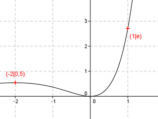
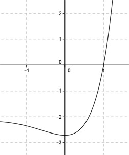

Aufgabe 116 Ergänzen Sie die Wertetabelle für den Graphen: y = x2 * ex x -2 1 y 0,5 e y = f(-2) = (-2)2 * e-2 = 0,5 gerundet  An welchen Stellen x die Funktion den Wert e annimmt, ist elementar nicht zu ermitteln. Abgelesen: Es ist eine Stelle. Zur Berechnung wendet man ein Näherungsverfahren an, hier die Regula falsi. x0 = gesuchte Nullstelle x1 * |y(x2)| + x2 * |y(x1)| x0 = ------------------------------ |y(x1)| + |y(x2)| f(x) = e eingesetzt : e = x² * ex | - e x² * ex - e = 0 Als Funktion: y = x² * ex - e Die Nullstellen dieser Funktion (y = 0) entsprechen den gesuchten Werten für x. An welchen Stellen x die Funktion den Wert e annimmt, ist elementar nicht zu ermitteln. Abgelesen: Es ist eine Stelle. Zur Berechnung wendet man ein Näherungs- verfahren an, hier die Regula falsi. x0 = gesuchte Nullstelle x1 * |y(x2)| + x2 * |y(x1)| x0 = ------------------------------ |y(x1)| + |y(x2)| fx = e eingesetzt: e = x2 * ex |-e x2 * ex - e = 0 Als Funktion: y = x2 * ex - e Die Nullstellen dieser Funktion (y = 0) entsprechen den gesuchten Werten für x.  Abgelesen: Nullstelle zwischen 0,8 und 1,2. Nullstelle x0 zwischen 0,2 und 1,2 mit Excel ermittelt: A B C D E F G H I J 0,8 1,2 2,0624 1,2938 1,6499 1,5525 3,2024 3,3561 0,9542 -0,3541 0,9542 1,2 2,0624 0,3541 1,9679 0,4249 2,3928 2,4164 0,9902 -0,0789 0,9902 1,2 2,0624 0,0789 2,0422 0,0947 2,1369 2,1413 0,9979 -0,0167 0,9979 1,2 2,0624 0,0167 2,0581 0,0201 2,0782 2,0791 0,9996 -0,0035 0,9996 1,2 2,0624 0,0035 2,0615 0,0042 2,0657 2,0659 0,9999 -0,0007 0,9999 1,2 2,0624 0,0007 2,0622 0,0009 2,0631 2,0631 1,0000 -0,0002 1,0000 1,2 2,0624 0,0002 2,0623 0,0002 2,0625 2,0625 1,0000 0,0000 Die gesuchte Nullstelle ergibt sich nach mehreren Näherungen mit ausreichender Genauigkeit zu x0 = 1 gerundet. Weitere Erläuterungen zur Tabelle siehe Aufgabe 101.